 Czym jest Czarci Młyn?
Czarci Młyn to popularna atrakcja turystyczna i zabytek znajdujący się w Świeradowie-Zdroju, malowniczym mieście w południowo-zachodniej Polsce. Młyn ten został zbudowany w XIX wieku i przez wiele lat pełnił funkcję tradycyjnego młyna wodnego. Jego unikalna architektura oraz bogata historia przyciągają wielu odwiedzających, którzy chcą poznać tajniki dawnego młynarstwa. Obecnie Czarci Młyn działa jako skansen, gdzie można zobaczyć oryginalne urządzenia młynarskie oraz dowiedzieć się więcej o procesie mielenia zboża. To także świetne miejsce dla rodzin z dziećmi, które mogą uczestniczyć w warsztatach i pokazach, co czyni wizytę edukacyjną i interesującą.